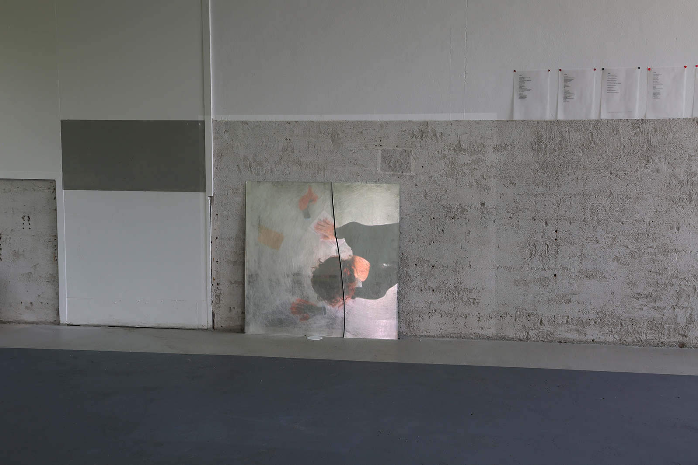
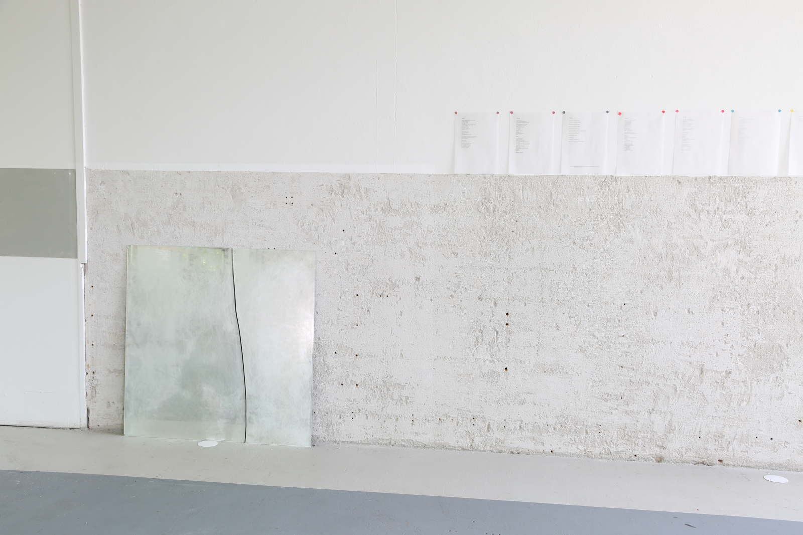
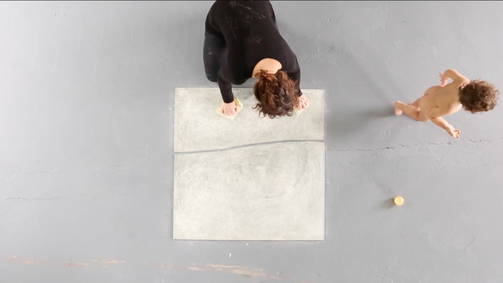
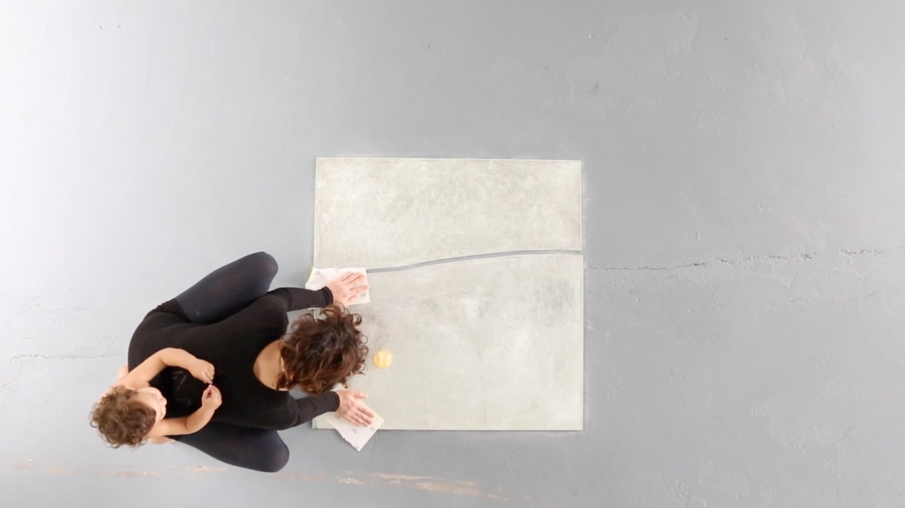
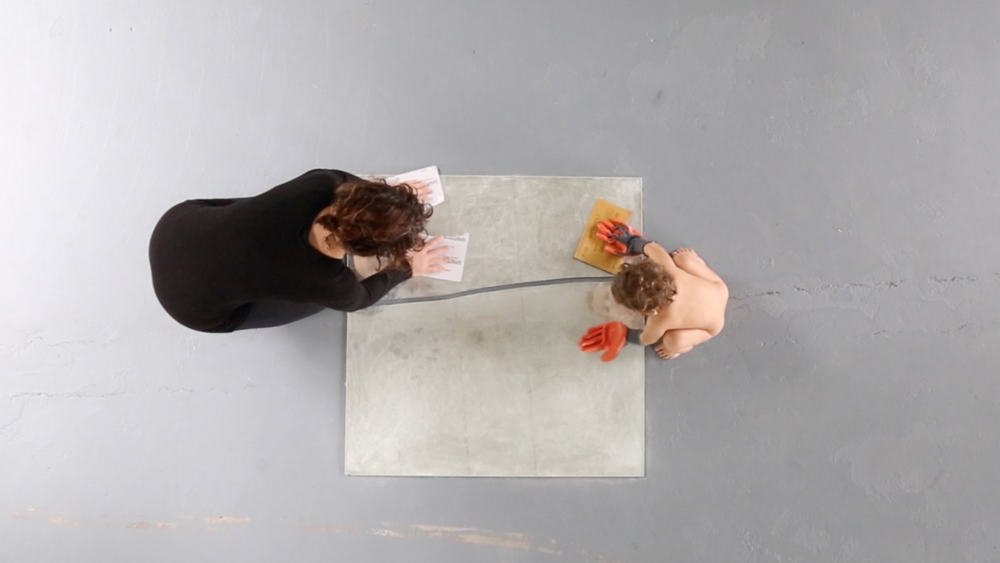
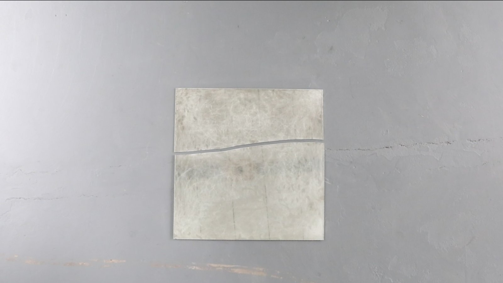

this is what a mother looks like (isso é como uma mãe se parece)
this is what a mother looks like
(isso é como uma mãe se parece)
2017
instalação (installation)
1,5 m x 1,5 m
video de 20’40”projetado sobre um espelho dividido e apagado com lixa d’água
(20'40" video on a splited mirror erased with sandpaper)






2017. re: production. mothers in arts residency. amsterdam.